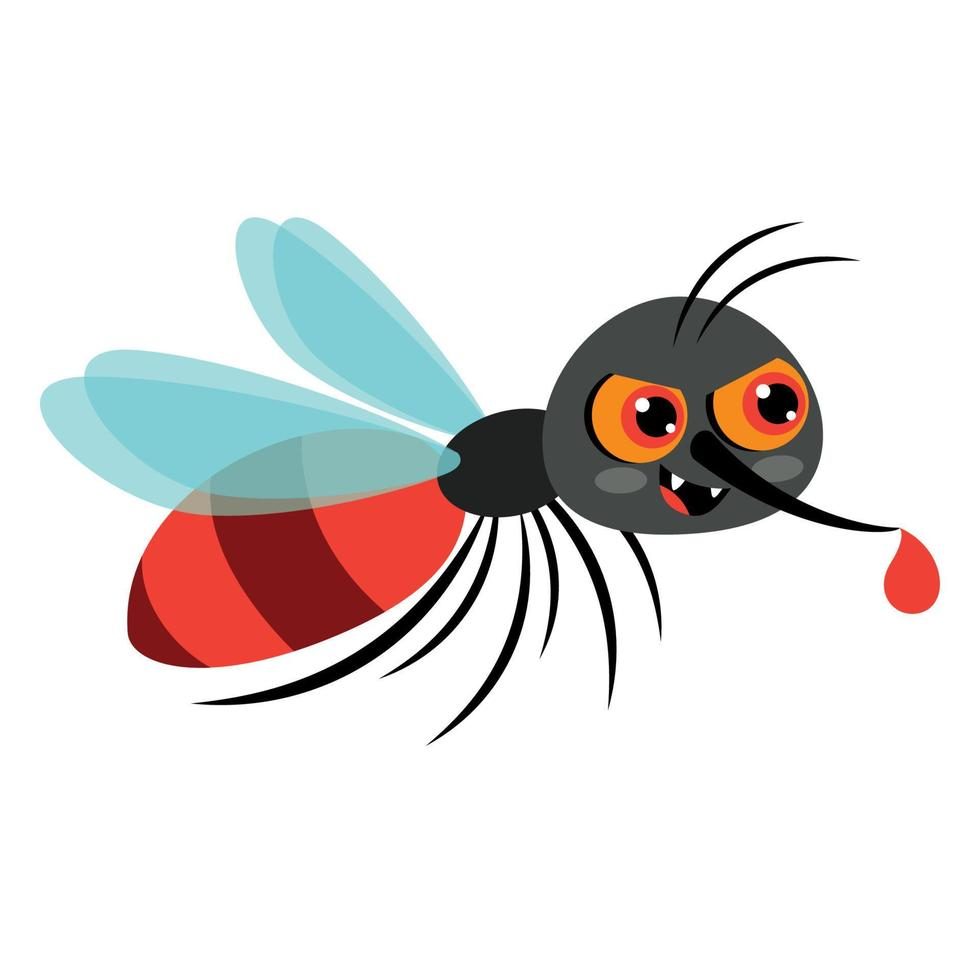
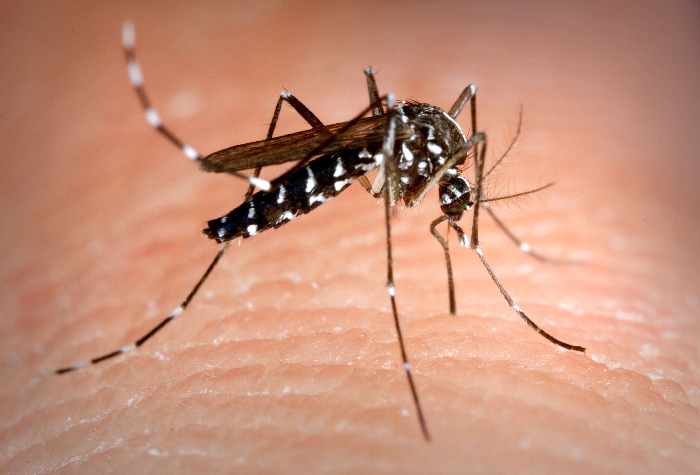
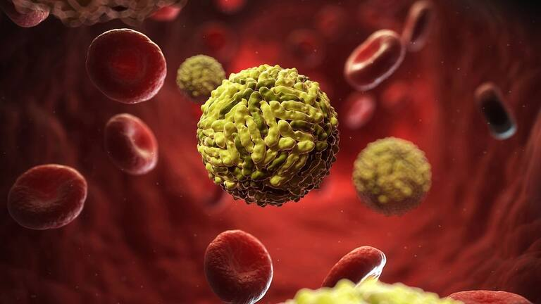

El dengue es una enfermedad viral causada por el virus del dengue (DENV), que pertenece a la familia Flaviviridae y al género Flavivirus. Es transmitida a los seres humanos por la picadura de mosquitos infectados del género Aedes, principalmente Aedes aegypti y, en menor medida, Aedes albopictus. Estos mosquitos son más comunes en regiones tropicales y subtropicales del mundo, donde las condiciones climáticas cálidas y húmedas favorecen su reproducción y propagación.

El Aedes aegypti es un mosquito de aproximadamente 1 cm, negro con rayas blancas en el cuerpo y las patas. Tiene hábitos diurnos, es más activo en las primeras horas de la mañana y al final de la tarde, y suele picar en las piernas, tobillos y pies. Se reproduce en zonas cercanas a los domicilios, en lugares con agua limpia y estancada como neumáticos, floreros y tanques de agua. Sus huevos son muy resistentes y pueden sobrevivir durante meses en ambientes secos hasta que el agua de la lluvia los active. En menos de 10 días, los huevos se convierten en mosquitos adultos, lo que hace que su reproducción sea rápida y difícil de controlar. Además del dengue, el Aedes aegypti también transmite enfermedades como la fiebre amarilla, el virus del Zika y la fiebre de Chikungunya.
El Aedes albopictus, aunque también puede transmitir el dengue, tiene una capacidad de transmisión menor en comparación con el Aedes aegypti. Una posible razón es que este mosquito prefiere alimentarse de otros mamíferos en lugar de humanos, lo que reduce las probabilidades de propagar el virus. Las epidemias de dengue son menos comunes en áreas donde solo está presente el Aedes albopictus. Visualmente, es muy similar al Aedes aegypti, lo que dificulta su diferenciación sin conocimientos especializados.

Para que ocurra la transmisión del dengue, el mosquito hembra debe estar infectado con el virus. No todos los Aedes aegypti transmiten la enfermedad; el virus necesita de 10 a 14 días dentro del mosquito para ser capaz de infectar a un humano. Por lo tanto, si un mosquito pica a una persona infectada y poco después pica a otra persona, no hay riesgo de transmisión inmediata a menos que el mosquito haya estado previamente infectado durante varios días. El dengue no se transmite directamente de persona a persona ni a través de contacto físico, besos, abrazos o el uso compartido de objetos.
Existen cuatro serotipos del virus del dengue (DEN-1, DEN-2, DEN-3 y DEN-4), lo que significa que una persona puede infectarse hasta cuatro veces, cada vez con un serotipo diferente. Una infección previa por un serotipo no proporciona inmunidad contra los otros, lo que aumenta el riesgo de desarrollar formas más graves de la enfermedad en infecciones posteriores.

Se cree que el virus del dengue ha circulado entre primates y mosquitos en los bosques tropicales de África y el Sudeste Asiático durante más de 1.000 años antes de infectar a los seres humanos. El primer reporte clínico documentado de una enfermedad compatible con el dengue se registró en 1780 en regiones de Asia, África y América del Norte. Durante el siglo XX, la urbanización acelerada, el crecimiento poblacional y el aumento de los viajes internacionales facilitaron la expansión del mosquito Aedes aegypti, lo que provocó un incremento significativo en los brotes de dengue en diversas partes del mundo.
En la actualidad, el dengue representa un importante problema de salud pública en países tropicales y subtropicales, con epidemias recurrentes que afectan a millones de personas cada año. La prevención del dengue se basa en el control del mosquito vector mediante la eliminación de criaderos de agua estancada, el uso de repelentes, mosquiteros y ropa que cubra la piel, así como campañas de concienciación pública. Aunque existen vacunas aprobadas en algunos países, la mejor estrategia para reducir la incidencia del dengue sigue siendo la prevención y el control del mosquito transmisor.